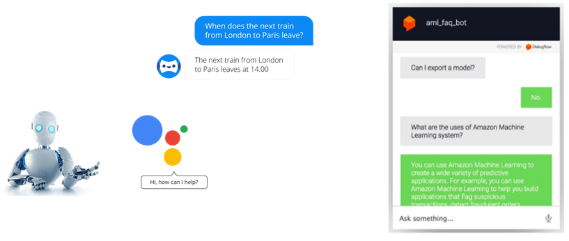
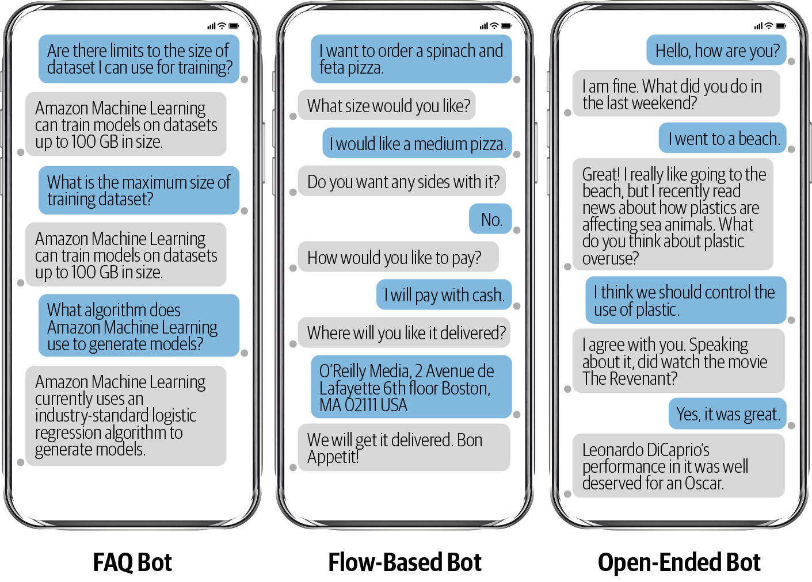

12.1 Chatbot Applications and Taxonomy
What bots are used for, and the main design families.
1. A short history
Chatbots and AI grew up together.
1950s–60s. Turing asked whether a machine could talk well enough that a person could not tell. Weizenbaum built ELIZA (1966), a rule-and-regex "Rogerian" therapist. People knew it was a program and still treated it as a listener. That is a warning, not a success metric: users will anthropomorphize a shallow bot.
1980s–2000s. Spoken dialog systems appeared, many of them military (DARPA). The new piece was signal processing plus a limited vocabulary, not open chat.
2000s–now. NLP and machine learning made the same ideas usable in customer service, health, finance, and retail. Messenger, Google Assistant, and Alexa are the public face. Most industry bots are still narrow.

2. Where they are used
A bot is a UI. The NLP inside it changes with the job.
| Domain | What the bot is asked to do |
|---|---|
| Shopping | Place or change an order, take payment, recommend an item |
| News | Narrow a search in conversation, return a matching article |
| Customer service | FAQs, complaints, a scripted flow the business already wrote |
| Medical | Symptom FAQs; intake questions, especially for older patients |
| Legal | FAQ, then follow-up questions so the next document is the right one |
| Education | Tutor, language practice, registration and scheduling |
Conversational recommenders are a live research and product area. The hard part is not greeting the user. It is tracking constraints as they arrive one turn at a time.
3. Three kinds of bot
How you build the system depends on which of these you are in.
FAQ / exact-answer bot. A fixed set of answers. Understand the question, retrieve the matching response. Turns are mostly independent. This is close to classification plus lookup.
Flow-based bot. The user reveals the request over several turns. Pizza size, then toppings, then address. The bot must remember what it already knows and ask only for what is missing. This is a dialog state machine with NLU on each utterance.
Open-ended bot. Chitchat. No ticket to close. The bot does not have to drive toward a goal. Entertainment and brand mascots live here. So do the failure modes: hallucination, inconsistency, and users who think the bot is a person.

4. Goal-oriented vs chitchat
The coarse split used in research and in vendor tools:
| Family | Includes | Success looks like |
|---|---|---|
| Goal-oriented | FAQ bots, flow-based bots | The user completes a task |
| Chitchat | Open-ended bots | The conversation stays coherent and on-tone |
Both are used in industry. Both are active research. Do not use a chitchat model as a customer-service bot and hope it will "figure out" the order. And do not use an FAQ lookup table when the user needs a five-slot pizza flow. Write the success test first (ticket closed, order placed, user still chatting). The test picks the cell.
A hybrid product is normal: FAQ for "where is my order?", flow for "I want to return this," and a small chitchat layer for "thanks" and "hello." Keep the layers separate. One model that tries to do all three will be good at none of them.
Note 12.2 is the shared pipeline (speech, NLU, dialog manager, NLG). Note 12.3 is intents, slots, and response generation.
5. What this week is for
By the end of note 12.1 you should be able to:
- place ELIZA, spoken dialog, and a modern assistant on the history line
- pick a domain row from the table and say whether the bot is FAQ, flow, or open
- refuse a design that uses chitchat weights for a goal-oriented task
6. Practice
-
Is a password-reset bot FAQ, flow-based, or open-ended? What would make you change that label?
-
Why did ELIZA convince people even though it had no model of the user?
-
A retailer wants "something like Alexa" for returns. Which taxonomy cell do you start in, and what do you refuse to promise?
"Like Alexa" is a channel, not a taxonomy cell. Ask what task must complete.